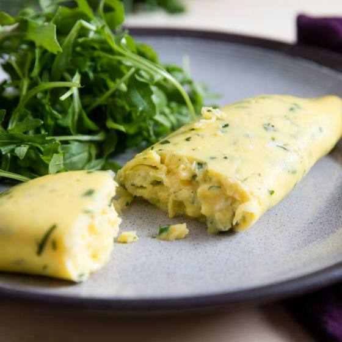
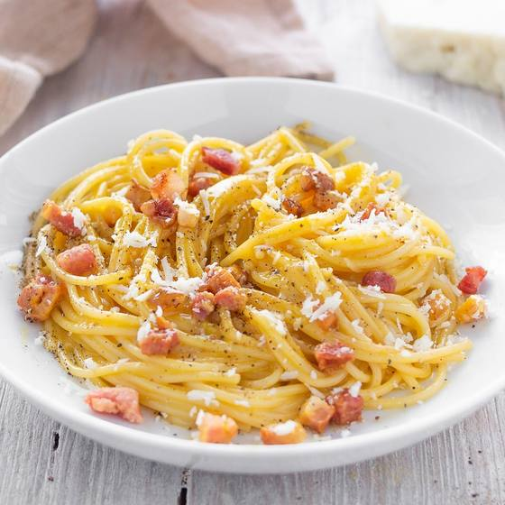

Завтраки
МИ
Мария Иванова
Санкт-Петербург · demo@povaryoshka.ru
Учусь готовить и сохраняю всё, что хочется повторить.
- 1публикация
- 4сохранено
- 2подписки
- 0подписчиков
 Завтраки
Завтраки
 Завтраки
Завтраки

Основные блюда Выпечка и десерты
Выпечка и десерты
ЕК